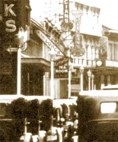

|
j
a v a s c r i p t |
February 27, 1942
I just missed getting slapped today when I biked up Quezon Avenue and failed to notice crowds lined up on both sides of the street. I passed the Quiapo Church and had just turned right when I heard a terrific whistle and a sentry yelling at me to stop. I turned around and biked back slowly, passing him as he became distracted. Five blocks later, I spotted an opening in the crowd and dashed through to work. No one had a clue as to who had passed by. One said he peeked and saw a general pass by with lots of decorations.
Escolta in the '30's
Courtesy Michael Price

Close up of left picture
Astoria Before Schaer Era |
|
|
|
|